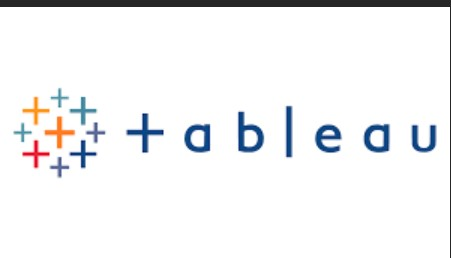
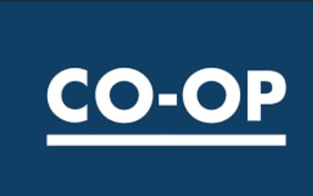

In this project, we analyzed 30 million records of data from Bureau Of Transportation Statistics January 2018-April 2023
Data Preparation Or Cleaning: Handling Null values and Identifying outliers in the data
Data Merging: Created a Database to merge all the data
Data Analysis Tools:SQL, Microsoft Excel, Tableau, Python

The intent of this project was to perform data cleaning using python
The aim of this project was to perform cleaning, Exploratory Data Analysis and run different models
In this project, the aim was to predict if customers will open a savings account, the key learnings were to try different models and measure the performance using AUC and identify feature importance
In this project, we applied concepts of building different models and then fitting them. Comparing the performance of the model by using AUC. This was an End to End project on Python.

This contains the dashboards that I have worked on for different projects.

In this project, we intended to analyze the Drexel Co-op data to see if students are enjoying the co-op programs or have any issues that they are facing